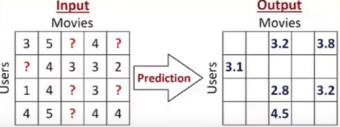
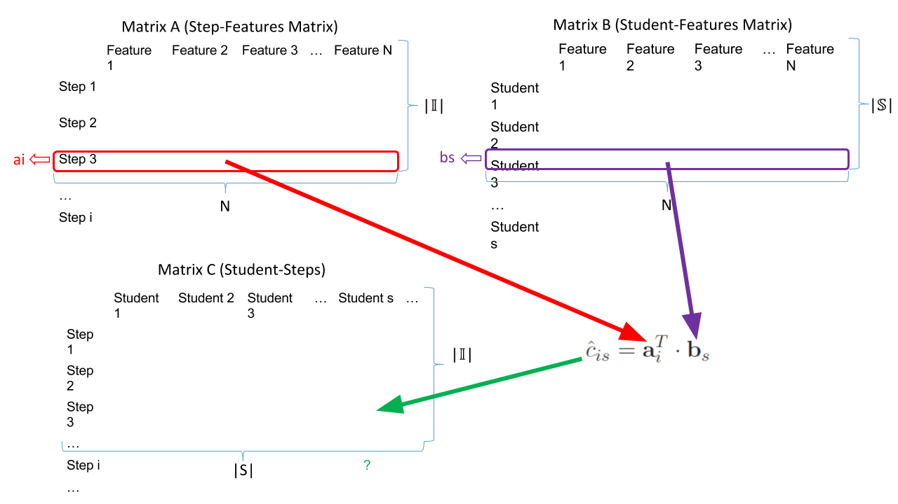
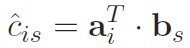

Welcome to Team Swift's KDD Cup Project Website!
This project is for Professor Ding's Spring 2016 Applied Machine Learning course at UMass Boston.
About Us
We are Team Swift.
Daniel Manning - Undergraduate Student - daniel.manning001@umb.edu
Iman Rezaei - Undergraduate Student - rimanmk@gmail.com
Jie Qian - Graduate Student - jie.qian001@umb.edu
Fei Wu - Graduate Student - wufei523@gmail.com
Problem Description
This project is based on KDD Cup's 2010 Educational Data Mining Challenge.
Information about KDD Cup
Participants competed to find and learn the best model from students’ past behavior so they can predict their future performance, specifically on algebraic problems. Accurate predictions can then be used to understand and analyze students’ learning process better which can lead to optimizing their learning process.
Using a dataset from this competition, we use predictive modeling to learn whether a student correctly answers algebraic problems on the first attempt. While performing data analysis, we noticed that the size of the dataset may be too large for training our model. As a solution, we perform filtering techniques to only include data that we believe is meaningful. Feature engineering is also researched and applied to produce more meaningful features. Our ultimate goal is to train and test transformable models to predict Correct First Attempts with accuracy and precision.
Why is our project a good machine learning topic?
Our project is based on a good machine learning topic because we have have good enough history, training samples with appropriate features for the students. Therefore, we can train our machine to learn from the past history of the students and make predictions on new cases.
Moreover, the higher level concept of a transformable model that is initially created for predicting whether if a student answers an algebraic step correct or not can, can be also used in many other topics such as in:
- Organizing SAT, GRE and GMAT questions
- Online surveys / personality tests
- Predicting whether a customer clicks on an ad depending on the page, section and content of the ad
Data Description
The dataset used in our project is Algebra I 2005-2006 from KDD Cup 2010, containing 813,661 interaction steps. Descriptions of features can be found on the KDD Data Format page. We have applied multiple levels of filtering to exclude data we see as unnecessary to train our models.
Filter 1: Duration Time
Through data analysis, we have found that 95% of students spend at most 105 seconds on each interaction step.
We have excluded interaction steps that exceed this number as it is more likely that future students are going to spend
no more than 105 seconds on each step. Therefore, we decided to filter our data to be focused on the students with that behavior.
The following histogram shows this phenomenon:

Because a step duration of 0-105 seconds covers 95% of interaction steps, such a step duration is likely to be
included in the test data.
The algorithm is applied in Source/DurationTimeFilter.py, and outputs to file, traindataNoDuration.csv. This file contains 769,300 interaction steps (~95% of original dataset).
Filter 2: Problem Frequency
For our second filter, some small feature engineering is applied to categorize each unique problems by string
concatenating problem hierarchy with problem name. For example:
| Problem Hierarchy | Problem Name | Unique Identifier |
| Unit ES_04, Section ES_04-1 | EG40 | Unit ES_04, Section ES_04-1;EG40 |
(sum of Problem View Totals | Problem View Total > 20) / (sum of Problem View Totals) = ~89.66%
As a toy example to explain the above formula, consider the following:
| Unique Problem | Total Unique Problem View |
| Unit CTA1_06, Section CTA1_06-4;L6FB07 | 80 |
| Unit CTA1_02, Section CTA1_02-2;BH1T35B | 42 |
| Unit CTA1_02, Section CTA1_02-2;BH1T21C | 19 |
(80 + 42) / (80 + 42 + 19) = 87%
If these Unique Problem Identifiers were sorted by their Problem View Total, the following graph is generated:

As you can see above, unique problems with row number < ~ 400 (view count > 20 in our data) account for having the highest total number of views.
The algorithm is applied in the following files:
Source/UniqueProbsTotalViews.py
Source/UniqueProbViewFilter.py
Source/traindataFilteredByView.py,
and outputs to file, traindataFilteredByView20.csv.
This file contains 616,977 interaction steps (~80% of filter 1 dataset,
traindataNoDuration.csv).
Final Datasets
The final datasets generated for our experiments are the following:
- test.csv is 20% of traindataFilteredByView20.csv (Randomly selected)
- trainValid.csv is 80% of the remaining
- train.csv is 80% of trainValid.csv (Randomly generated)
- validation.csv is the remaining 20%
Therefore, our new train.csv has 394,865 rows.
Machine Learning Methods
K-Nearest Neighbors
The K-Nearest Neighbors (KNN) algorithm is a non parametric lazy learning algorithm. It internally stores all the given train data and classifies new test input based on a similarity metric such as distance.
KNN predicts the value of an input based on the the closest K trained cases. In simple words, let's say in our case we want to predict the CFA on a specific step for a student. Let's also assume that K = 3. Then the algorithm looks at the closest 3 students that answered the same step measured by a distance function. If out of the closest 3 neighbors 2 students have CFA = 1 and one student with CFA = 0 then:
- If we choose to classify our test input, then the final CFA is the value that the majority of the 3 neighbors have. Hence, in our case the predicted value for our input is CFA = 1
- In KNN regression, the predicted value is the average of the values of the input's 3 closest neighbors in our simple example.
Note: It is quite useful to assign weights to the neighbors based on their distances. In other words, the closest neighbor to the given input has higher impact on the prediction result compare to the neighbors that are farther away from the input. Notably, that is also what we did when we applied KNN algorithm to our data.
There are 3 main distance functions that can be used in KNN:

Source: http://www.saedsayad.com/k_nearest_neighbors.htm
Choosing the best distance function depends on the datasets. As for high dimensional vectors, Manhattan function might work better than the Euclidean distance function.
Choosing a "good enough" K is another concern. There is no formula to find the exact best number of neighbors. However we can use the Elbow method to find to a reasonable number for K by plotting error vs. k and find the point where the error is not decreasing significatly (the elbow part).
Recommended System
Recommended systems perform data analysis to make predictions about the rating a user will give to specific items. Sites like Netflix and Amazon use recommended systems to suggest movies or products to their consumers. Here is an example:

- All the missing values are predicted based on the existing values.
- User is recommended the movie which they would rate the highest.
This type of model is applied in the published paper from KDD Cup 2010, Collaborative Filtering Applied to Educational Data Mining. The following table is a comparison between the above example and this dataset:
| Recommender System | KDD Problem |
| Users | Students |
| Items | Steps of Problems |
| Rating, purchases, etc. | Correct First Attempt |
| User-Item Matrix | Student-Step Matrix |
| The resulting matrix is sparse. | |
| Goal: Predict the missing elements. | |
Decomposing the Student-Step Matrix
Find matrix A and B such that the product of the matrices
approximates the known elements of C. We then minimized the error with the following equation:
Prediction
Predicting CFA's using a student-step matrix based on student IDs and the interaction steps is shown by the following diagram and equation:

Because we know the features of student s, and we know the features of step i, we can then predict if student s can correctly answer step i.
Experimental Design
Please discuss how you will thoroughly test the machine learning method(s) using the datasets you construct.
K-Nearest Neighbors
Choosing K: For KNN, we will consider plotting a graph of RMSE vs K and apply the elbow method to find a "good enough" number of nearest neighbors.
Weight Function: For choosing the right weight to be assigned to neighbors, we are going to experiment with different weights, such as:
- Uniform: "All points in each neighborhood are weighted equally."
- Distance: "weight points by the inverse of their distance." In other words, closer neighbors of the input test point will have more impact on the prediction result.
- Our own defined weight algorithm: Our team will attempt to experiment with other suitable weighting techniques that we can create using our knowledge of existing weight functions.
Algorithm: There are 5 main algorithms provided by sklearn library to compute the nearest neighbors: "ball_tree", "kd_tree", "brute" and "auto". Our team will study and analyse these algorithms in details to choose the method that works the best to use it in our KNN model.
Distance Function: Euclidean, Manhattan and Minkowski are among the most popular distance functions. Choosing the suitable function depends on our data. Therefore, we will experiment with these functions to find the metric that suits our data best.
n_jobs: The number of jobs / threads to run for neighbors search. If observed that we need to lower the time complexity of the search we will set this parameter to "-1", which means the number of jobs created is equal to the number of CPU cores we have in our computers.
Recommended System
For Recommended System, we will test our model with different combinations of parameters and compare the results.
One of the most important parameters is the number of features (N) we want to create for students and steps. An appropriate N will improve the accuracy of the prediction; however, a very large N would significantly increase the training time. The number of iterations and learning rate will also affect the result and training time.
We will train several models and test it using our generated test set, and then tweak parameters as we see fit by comparing results. Regularization will also be used to prevent overfitting.
- Features Used from Training Set
- Student ID, Problem Hierarchy, Problem Name, Step Name
- Construct New Feature: Step ID
- step_id = problem_hierarchy[i] + '/'+ problem_name[i] + '/'+ step_name[i]
-
Library Used: Factorization Machines in Python:
https://github.com/coreylynch/pyFM - Input Data
- List of Student ID and step_id (described above)
- List of Correct First Attempt (CFA)
- Data Representation
- Lists of standard Python dict objects, where the dict elements map each instance's categorical and real valued variables to its values.
- Use sklearn DictVectorizer to convert them to a matrix
We will then introduce bias including
(overall mean CFA),
(mean CFA of a certain student s), and
(mean CFA of a certain step i).
The resulting prediction equation is:
After we train the KNN and Recommender System models, we will use some stacking algorithm to combine the results from each of our models. In phase one, the linear blender gave us fairly good results, but we will try more algorithms, both linear and nonlinear ones, in the final phase.
Note: Initially, all the “training” and “testing" mentioned above is going to be applied on our train and validation sets respectively. At the end, for the final testing we will use our test set to experiment with the final results.
Github Repository
Click the button below to visit the online code repository on Github.
MLKDD on GitHub